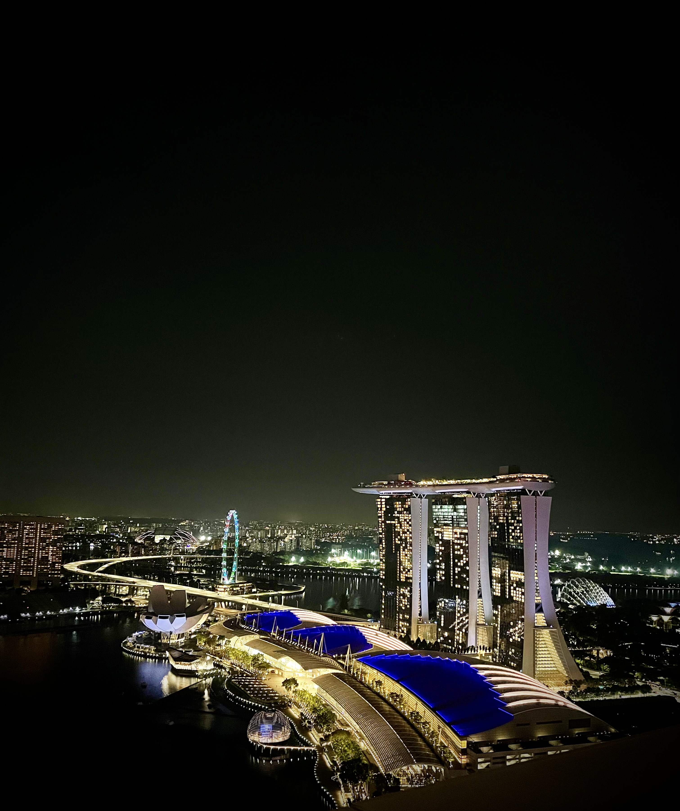
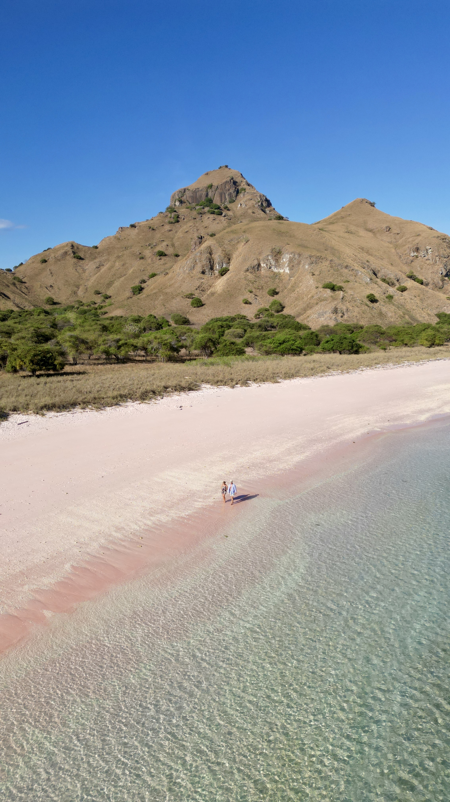
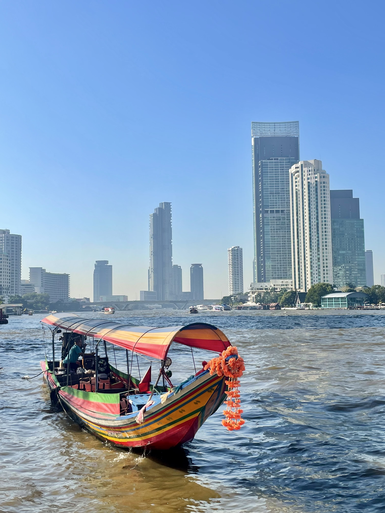
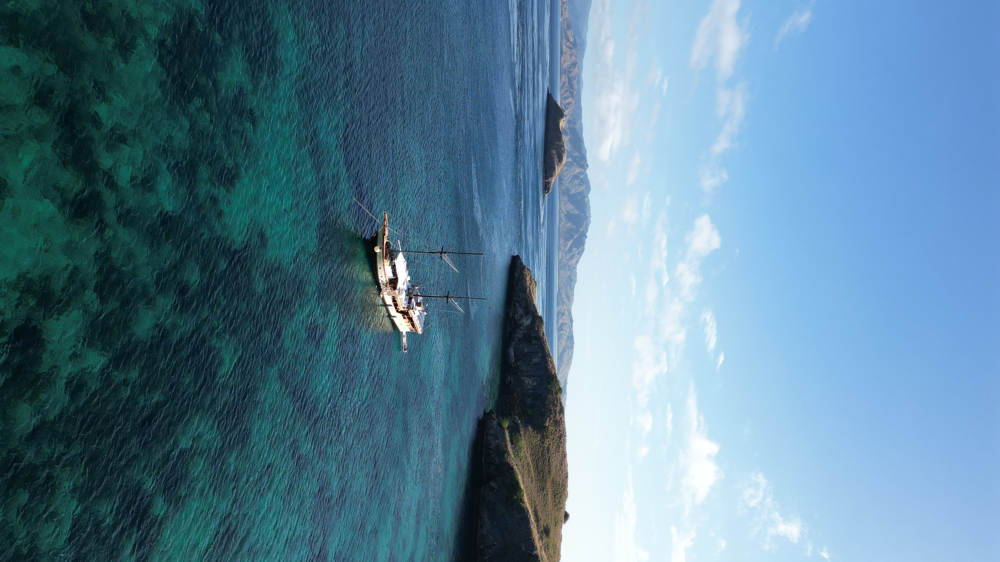

OUR HOME
Singapore
The city we now call home. From tropical gardens and unexpected wildlife to waterfront nights and the everyday moments that make Singapore such a special place to live.
Discover Singapore →
EDITOR'S NOTE
The Expat Edits was created to celebrate thoughtful travel across Asia. Through carefully selected photography, honest reviews and personal experiences, each edition tells the story of a destination beyond the usual tourist highlights.
Every journey begins with curiosity. We hope these pages inspire you to slow down, explore a little deeper and create unforgettable memories of your own.
FEATURED EDITIONS
Each edition is built around one unforgettable destination, combining original photography, carefully chosen hotels, restaurants and travel experiences to help you discover Asia a little differently.

OUR HOME
The city we now call home. From tropical gardens and unexpected wildlife to waterfront nights and the everyday moments that make Singapore such a special place to live.
Discover Singapore →
INDONESIA
From sunrise over Borobudur to the volcanic landscapes of Central Java, this edition explores one of Indonesia's most inspiring islands through photography, history and unforgettable experiences.
Discover Java →
VIETNAM
Peaceful countryside, dramatic mountain passes and timeless villages come together in one of Southeast Asia's most rewarding destinations.
Wander Vietnam →
THAILAND
Discover hidden canals, spectacular temples and a city where tradition and modern life exist side by side.
Explore Bangkok →
CAMBODIA
Ancient temples, rich history and extraordinary culture combine to create one of Asia's most memorable journeys.
Enter Angkor →
MALAYSIA
Heritage streets, colourful architecture and some of the finest food in Southeast Asia make Penang one of our favourite editions.
Walk George Town →
INDONESIA
Wild islands, extraordinary wildlife and three unforgettable nights aboard Samara 2 make Komodo one of the most rewarding journeys we've taken.
Discover Komodo →THAILAND
Three islands, turquoise water and the kind of tropical scenery that makes it very easy to slow down and stay a little longer.
Discover the Gulf Islands →
INDONESIA
Clear turquoise water, quiet beaches, colourful island life and a slower side of Indonesia that is very easy to fall in love with.
Discover Lombok →JAPAN
From the energy of Tokyo to ancient temples, autumn colours and the timeless beauty of Mount Fuji, Japan is a journey that stays with you long after you leave.
Discover Japan →EXPLORE
Every destination begins with curiosity. Explore our interactive map to discover every edition of The Expat Edits.
FROM THE JOURNAL
Sometimes one photograph tells a bigger story than an entire guide. These are a few of our favourite moments from across Asia.